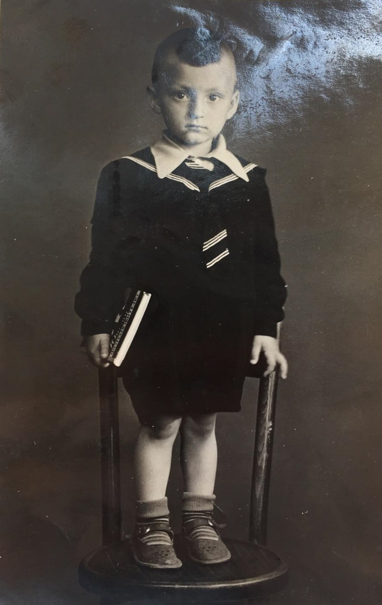

Родился: 17.06.1955, г. Копейск
Умер: 15.12.2009, г. Копейск
Род: Сербиновы
Продолжительность жизни: 54
Место жительства: г. Копейск
Основное занятие: Автослесарь
Окончил школу, поступил в автодорожный техникум, отучился, сходил в армию, женился, родился старший сын Сергей в 1979 году, жил на пос. Горняк (Злоказово) а в 1985 году попал в ДТП, получил травму головы, была трепанация черепа, все благополучно для него обошлось, более-менее, родился Антон, Саша работал на СтО слесарем авто, в 91 году умирает их мать и как раз начались лихие 90-е и выпивать стал, в семье скандалы, работы стало меньше и в основном за бутылку расчет, так тянулось до его смерти, 2009 г.
Брат Сергей тянул их семью (в материальном плане). После Сашиной смерти его жена Оля вышла на пенсию и стало с головой непонятно-что. Дети ее сдали в интернат (псих), не нужна.
Отец: Сербинов Федор Степанович
Мать: Сербинова Анна Сергеевна
Брат: Сербинов Сергей Федорович
Жена: Сербинова Ольга Владимировна
Сын: Сербинов Сергей Александрович
Сын: Сербинов Антон Александрович
Саша Сербинов: около 1960. Из альбома Марии Степановны Сербиновой. |